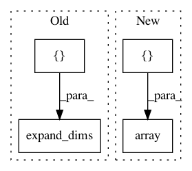

482360f06eebf18a460373ea00cd9920e2c8a37a,deepchem/models/tensorgraph/tests/test_layers_pickle.py,,test_Constant_pickle,#,133
Before Change
def test_Constant_pickle():
tg = TensorGraph()
feature = Feature(shape=(tg.batch_size, 1))
layer = Constant(np.expand_dims([17] * tg.batch_size, -1))
output = Add(in_layers=[feature, layer])
tg.add_output(output)
tg.set_loss(output)
After Change
def test_Constant_pickle():
tg = TensorGraph()
feature = Feature(shape=(tg.batch_size, 1))
layer = Constant(np.array([15.0]))
output = Add(in_layers=[feature, layer])
tg.add_output(output)
tg.set_loss(output)
In pattern: SUPERPATTERN
Frequency: 3
Non-data size: 4
Instances
Project Name: deepchem/deepchem
Commit Name: 482360f06eebf18a460373ea00cd9920e2c8a37a
Time: 2017-08-03
Author: peastman@stanford.edu
File Name: deepchem/models/tensorgraph/tests/test_layers_pickle.py
Class Name:
Method Name: test_Constant_pickle
Project Name: deepchem/deepchem
Commit Name: 482360f06eebf18a460373ea00cd9920e2c8a37a
Time: 2017-08-03
Author: peastman@stanford.edu
File Name: deepchem/models/tensorgraph/tests/test_layers_pickle.py
Class Name:
Method Name: test_Variable_pickle
Project Name: sentinel-hub/eo-learn
Commit Name: cc28a483cf95697bc4ab82030771da69c3cda5d0
Time: 2019-10-02
Author: benosircelj@gmail.com
File Name: features/eolearn/tests/test_doubly_logistic_approximation.py
Class Name: TestDoublyLogisticApproximation
Method Name: setUpClass